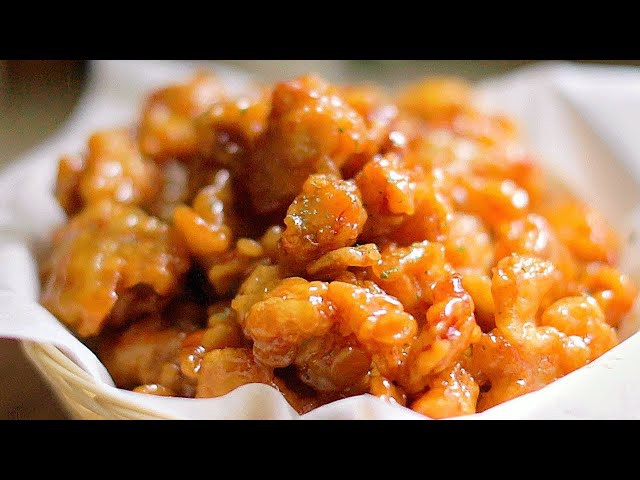

- OMG!!! You've never had chicken like this! Crispy, sweet, and savory. It's almost a forbidden fruit. If you don't like this you didnt make it right. Don't skimp on the ingridients
Ingridients
- 2lbs chicke thighs
- 2 cups water
- 4 tbsp sugar
- 2 tbsp salt
- 2 sprigs rosemary
- 3 cloves garlic
- 3 ginger slices, 1 inch each
- frying oil
- parsley flakes
Batter ingridients
- 1 cup flour
- 1 cup corn starch
- 1 tsp baking soda
- 1 cup ice water, or as needed
Honey Butter Sauce
- 1/4 cup honey
- 1 stick butter
- 1/4 cup white sugar
- 1/4 cup soy sauce
Recipie
- In a medium bowl combine white sugar, salt, garlic, ginger, and rosemary together. Cut the chicken into 1 inch pieces, put the chicken in and cover. Leave in refrigerator overnight.
- Heat the oil to 265.
- Drain the chicken and put the battr into chicken and mx by hand
- drop chicken into the oil and friy until golden brown.
- take out and let rest for 10 min
- drop chicken back in until darker brown
- next in a sauce pan put 1 stick of butter in and heat until liquid
- combine the remainder of the honey butter sauce
- after it begins to bubble, throw the fried chicken in and mix until all piecs are drenched in the sauce
- eat until stomach burst!!